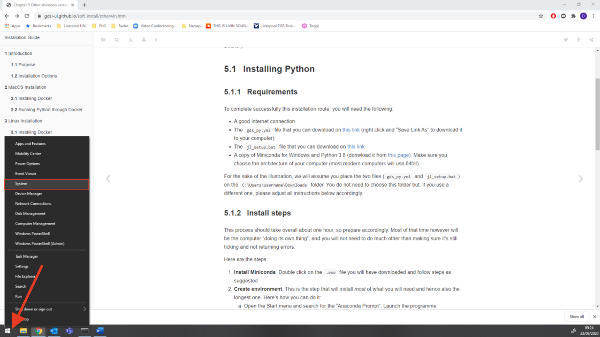
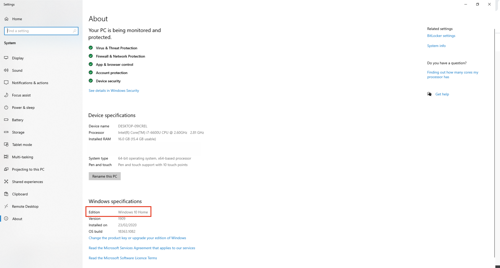

Windows Specifications
Windows Version
This guide shows you how to find out what version of Windows you are running.
Here are the steps you need to follow:
- Right click on the Windows logo in the left bottom corner of your screen and click on system.

- You will find the version of your Windows under Windows Specifications and Edition (here it is Windows 10 Home as an example):

Knowing the version you are running, you can then follow on to install Python for your version:
- If you are running Windows 10 Pro, head over here
- If you are running other versions, use this guide
Windows Architechture
IMPORTANT:
This is only relevant if you do not have Windows 10 Pro
If you are installing Python natively, you will need to know whether your computer is 32bit or 64bit, that is its architecture. Most modern computers are 64bit, so there is a good chance that is your case. However, please make sure to avoid trouble down the installation process.
To check which architecture you have, follow these steps:
- Right click on the Windows logo in the left bottom corner of the task menu and select System

This will bring you to your system information page
- The architecture of your computer can be found under the System type section (highlighted in red, for this example it is 64-bit):

Knowing which architecture your computer has allows you to download the right version of Miniconda, one of the requirements for successful installation.